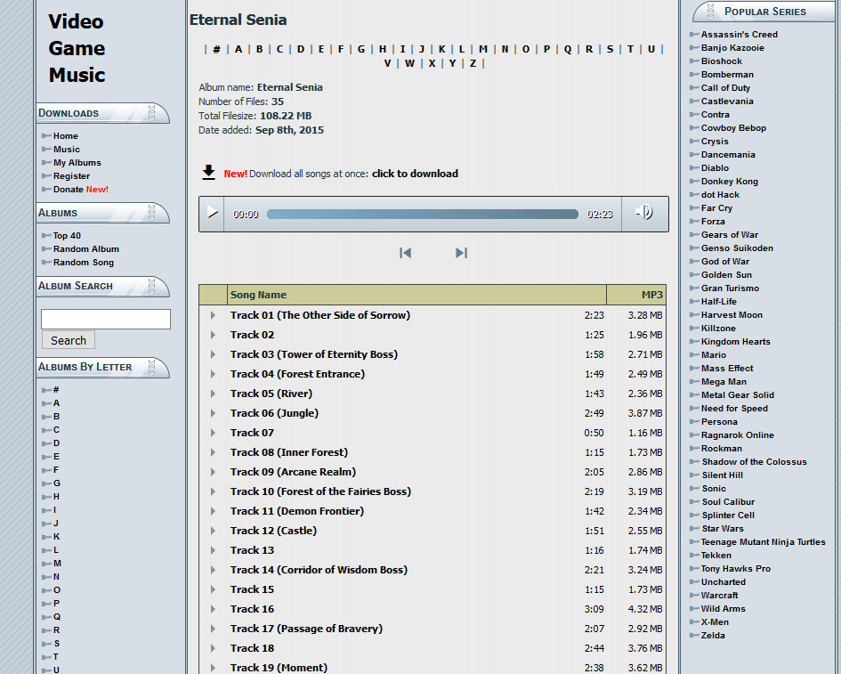

khinsider 是一個提供許多遊戲 OST 下載與試聽的網站，也提供許多免費單曲下載
不過下載整張專輯的功能是需要 donate 的，因此就弄了一個簡單的腳本來批量下載
下載連結: Greasy Fork
我之所以知道這個網站是為了下載整張永恆的賽妮亞的 OST
這遊戲也是不錯的遊戲，有興趣可以玩玩看
用法
安裝完上面的腳本之後到 khinsider 網站上找到你喜歡的遊戲這篇文章以永恆的賽妮亞作為範例

按下圖片中的 click to download 然後右邊會出現一個進度條建議瀏覽器留在這個分頁，因為同時瀏覽其他分頁時可能會卡卡的(Firefox)
等進度條跑到滿之後瀏覽器應該會自動觸發下載，檔案名=[遊戲名稱].zip
把 zip 用 7zip,winrar 之類的程式打開裡面就會有你想要的音樂了
原理
直接點擊下方的任何一首音樂就會進入到音樂的下載頁面，而下載頁面上有連結然後用ajax的方式去把檔案存在記憶體成Blob的格式最後用 JSZip 把檔案包裝成 zip 檔
程式碼: Greasy Fork
downloadblob
因為網站本身在https://downloads.khinsider.com/上，屬於 https
而存放音樂的伺服器在http://66.90.93.122/上，屬於 http
因為 protocol 不同的關係不符合同源政策所以沒辦法直接用一般的XMLHttpRequest和fetch
需要使用腳本管理器提供的GM_xmlhttpRequest來做請求
函數也很簡單，就是給 url 然後回傳一個Promise<Blob>1
2
3
4
5
6
7
8
9
10
11
12
13
14// @grant GM_xmlhttpRequest
//something...
function downloadblob(url) {
return new Promise((resolve, reject) => {
GM_xmlhttpRequest({
method: 'GET',
url,
responseType: 'blob',
onload: res => resolve(res.response)
})
})
}
主程式
在原本就有的 click to download 連結上綁click事件並取消它，然後顯示進度條接下來取得遊戲名稱和各首歌下載頁面的網址用fetch去抓下載頁面，並且用jquery在上面找出mp3的真實連結再來把把真實連結轉成{blob: Promise<Blob>,name: String}的物件，用reduce去加入JSZip (JSZip支援Promise)
而JSZip有支援進度，在有進度時就更新前面的<progress>
最後在下載完成時把整個zip的Blob弄成 url 並觸發下載就完成了1
2
3
4
5
6
7
8
9
10
11
12
13
14
15
16
17
18
19
20
21
22
23
24
25
26
27
28
29
30
31
32
33
34
35
36
37
38
39
40
41
42
43
44
45
46
47
48$('a:contains("click to download")').on('click', e => {
e.preventDefault()
$('.albumMassDownload').append(`
<div>
<span>Download progress:</span>
<progress min="0" max="100" id="dp" value="0"></progress>
</div>
`)
const title = $('h2')[0].textContent
const urls = $('tr>td.clickable-row:not([align])')
.toArray()
.map(el =>
$(el)
.find('a')
.attr('href')
)
const requests = urls.map(e => fetch(e).then(r => r.text()))
Promise.all(requests).then(ar =>
ar
.map(ht => {
const url = $(ht)
.find('a:contains("Click here to download as MP3")')
.attr('href')
return {
blob: downloadblob(url),
name: decodeURIComponent(url.split('/').pop())
}
})
.reduce((zip, file) => {
zip.file(file.name, file.blob)
return zip
}, new JSZip())
.generateAsync({ type: 'blob' }, meta => {
$('#dp').attr('value', parseInt(meta.percent))
})
.then(blob => {
const url = URL.createObjectURL(blob)
const a = document.createElement('a')
a.download = title + '.zip'
a.href = url
document.body.appendChild(a)
a.click()
a.remove()
URL.revokeObjectURL(url)
})
)
})